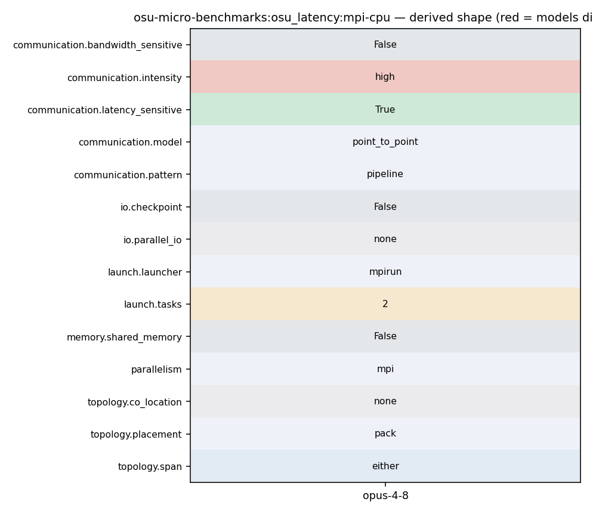

mpirun -np 2 [--hostfile hosts] osu_latency
135 } 136 fflush(stdout); 137 print_only_header(myid); 138 for (size = options.min_message_size; size <= options.max_message_size; 139 size = (size ? size * 2 : 1)) { 140 num_elements = size / mpi_type_size; 141 if (0 == num_elements) {
275 omb_papi_stop_and_print(&papi_eventset, size); 276 277 if (myid == 0) { 278 double latency = (t_total * 1e6) / (2.0 * options.iterations); 279 fprintf(stdout, "%-*d", 10, size); 280 if (options.validate) { 281 fprintf(stdout, "%*.*f%*s", FIELD_WIDTH, FLOAT_PRECISION,
174 MPI_CHECK(MPI_Barrier(omb_comm)); 175 t_total = 0.0; 176 177 for (i = 0; i < options.iterations + options.skip; i++) { 178 if (i == options.skip) { 179 omb_papi_start(&papi_eventset); 180 }
194 touch_managed_src_no_window(s_buf, size, ADD); 195 } 196 #endif /* #ifdef _ENABLE_CUDA_KERNEL_ */ 197 MPI_CHECK(MPI_Send(s_buf, num_elements, 198 omb_curr_datatype, 1, 1, omb_comm)); 199 MPI_CHECK(MPI_Recv(r_buf, num_elements, 200 omb_curr_datatype, 1, 1, omb_comm,
187 for (j = 0; j <= options.warmup_validation; j++) { 188 if (i >= options.skip && 189 j == options.warmup_validation) { 190 t_start = MPI_Wtime(); 191 } 192 #ifdef _ENABLE_CUDA_KERNEL_ 193 if (options.src == 'M') {
275 omb_papi_stop_and_print(&papi_eventset, size); 276 277 if (myid == 0) { 278 double latency = (t_total * 1e6) / (2.0 * options.iterations); 279 fprintf(stdout, "%-*d", 10, size); 280 if (options.validate) { 281 fprintf(stdout, "%*.*f%*s", FIELD_WIDTH, FLOAT_PRECISION,
194 touch_managed_src_no_window(s_buf, size, ADD); 195 } 196 #endif /* #ifdef _ENABLE_CUDA_KERNEL_ */ 197 MPI_CHECK(MPI_Send(s_buf, num_elements, 198 omb_curr_datatype, 1, 1, omb_comm)); 199 MPI_CHECK(MPI_Recv(r_buf, num_elements, 200 omb_curr_datatype, 1, 1, omb_comm,
239 touch_managed_dst_no_window(s_buf, size, ADD); 240 } 241 #endif /* #ifdef _ENABLE_CUDA_KERNEL_ */ 242 MPI_CHECK(MPI_Recv(r_buf, num_elements, 243 omb_curr_datatype, 0, 1, omb_comm, 244 &reqstat)); 245 #ifdef _ENABLE_CUDA_KERNEL_
194 touch_managed_src_no_window(s_buf, size, ADD); 195 } 196 #endif /* #ifdef _ENABLE_CUDA_KERNEL_ */ 197 MPI_CHECK(MPI_Send(s_buf, num_elements, 198 omb_curr_datatype, 1, 1, omb_comm)); 199 MPI_CHECK(MPI_Recv(r_buf, num_elements, 200 omb_curr_datatype, 1, 1, omb_comm,
247 touch_managed_dst_no_window(r_buf, size, SUB); 248 } 249 #endif /* #ifdef _ENABLE_CUDA_KERNEL_ */ 250 MPI_CHECK(MPI_Send(s_buf, num_elements, 251 omb_curr_datatype, 0, 1, omb_comm)); 252 } 253 #ifdef _ENABLE_CUDA_KERNEL_
275 omb_papi_stop_and_print(&papi_eventset, size); 276 277 if (myid == 0) { 278 double latency = (t_total * 1e6) / (2.0 * options.iterations); 279 fprintf(stdout, "%-*d", 10, size); 280 if (options.validate) { 281 fprintf(stdout, "%*.*f%*s", FIELD_WIDTH, FLOAT_PRECISION,
276 277 if (myid == 0) { 278 double latency = (t_total * 1e6) / (2.0 * options.iterations); 279 fprintf(stdout, "%-*d", 10, size); 280 if (options.validate) { 281 fprintf(stdout, "%*.*f%*s", FIELD_WIDTH, FLOAT_PRECISION, 282 latency, FIELD_WIDTH, VALIDATION_STATUS(errors));
1037 1038 Examples: 1039 1040 - mpirun_rsh -np 2 -hostfile hostfile MV2_USE_CUDA=1 osu_latency D D 1041 - mpirun_rsh -np 2 -hostfile hostfile MV2_USE_ROCM=1 osu_latency D D 1042 1043 In this run, the latency test allocates buffers at both rank 0 and rank 1 on
62 63 Examples: 64 Latency test on CPU with buffer type NumPy: 65 mpirun -np 2 --hostfile hosts python run.py \ 66 --benchmark latency --buffer numpy 67 68 Allgather test on CPU with buffer type NumPy and message lenghts 128 to 4096:
103 break; 104 } 105 106 if (numprocs != 2) { 107 if (myid == 0) { 108 fprintf(stderr, "This test requires exactly two processes\n"); 109 }
1037 1038 Examples: 1039 1040 - mpirun_rsh -np 2 -hostfile hostfile MV2_USE_CUDA=1 osu_latency D D 1041 - mpirun_rsh -np 2 -hostfile hostfile MV2_USE_ROCM=1 osu_latency D D 1042 1043 In this run, the latency test allocates buffers at both rank 0 and rank 1 on
113 } 114 115 if (options.buf_num == SINGLE) { 116 if (allocate_memory_pt2pt(&s_buf, &r_buf, myid)) { 117 /* Error allocating memory */ 118 omb_mpi_finalize(omb_init_h); 119 exit(EXIT_FAILURE);
55 OMB_CHECK_NULL_AND_EXIT(omb_lat_arr, "Unable to allocate memory"); 56 } 57 58 omb_init_h = omb_mpi_init(&argc, &argv); 59 omb_comm = omb_init_h.omb_comm; 60 if (MPI_COMM_NULL == omb_comm) { 61 OMB_ERROR_EXIT("Cant create communicator");
194 touch_managed_src_no_window(s_buf, size, ADD); 195 } 196 #endif /* #ifdef _ENABLE_CUDA_KERNEL_ */ 197 MPI_CHECK(MPI_Send(s_buf, num_elements, 198 omb_curr_datatype, 1, 1, omb_comm)); 199 MPI_CHECK(MPI_Recv(r_buf, num_elements, 200 omb_curr_datatype, 1, 1, omb_comm,
33 34 osu_bw_SOURCES = osu_bw.c $(UTILITIES) 35 osu_bibw_SOURCES = osu_bibw.c $(UTILITIES) 36 osu_latency_SOURCES = osu_latency.c $(UTILITIES) 37 osu_mbw_mr_SOURCES = osu_mbw_mr.c $(UTILITIES) 38 osu_multi_lat_SOURCES = osu_multi_lat.c $(UTILITIES) 39 osu_latency_mt_SOURCES = osu_latency_mt.c $(UTILITIES)
103 break; 104 } 105 106 if (numprocs != 2) { 107 if (myid == 0) { 108 fprintf(stderr, "This test requires exactly two processes\n"); 109 }
194 touch_managed_src_no_window(s_buf, size, ADD); 195 } 196 #endif /* #ifdef _ENABLE_CUDA_KERNEL_ */ 197 MPI_CHECK(MPI_Send(s_buf, num_elements, 198 omb_curr_datatype, 1, 1, omb_comm)); 199 MPI_CHECK(MPI_Recv(r_buf, num_elements, 200 omb_curr_datatype, 1, 1, omb_comm,
103 break; 104 } 105 106 if (numprocs != 2) { 107 if (myid == 0) { 108 fprintf(stderr, "This test requires exactly two processes\n"); 109 }
1037 1038 Examples: 1039 1040 - mpirun_rsh -np 2 -hostfile hostfile MV2_USE_CUDA=1 osu_latency D D 1041 - mpirun_rsh -np 2 -hostfile hostfile MV2_USE_ROCM=1 osu_latency D D 1042 1043 In this run, the latency test allocates buffers at both rank 0 and rank 1 on